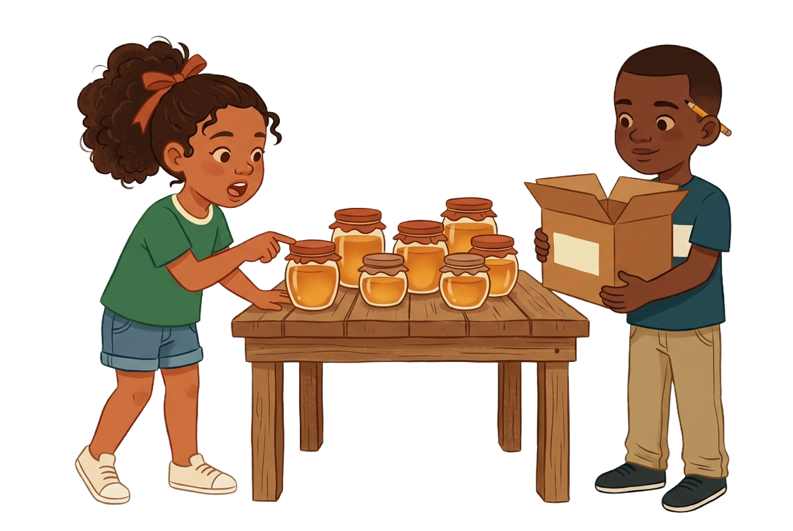

Números y aritmética · Cardinalidad en el conteoLa miel de Neyba
En Neyba, cinco cajas de miel esperan su número antes de las tres.
Cuenta bien: don Genaro no abre ninguna caja en la feria.

Cuentas los potes de la mesa y ves qué dice cada número.
Armas la regla y le pones a cada caja su número verdadero.
Compruebas las cinco cajas y firmas la etiqueta del viaje.